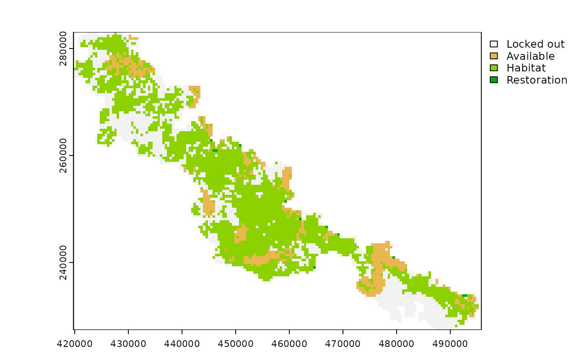

Solve a restoration optimization problem to generate a solution.
Usage
# S3 method for RestoptProblem
solve(a, b, ...)Arguments
- a
restopt_problem()Restoration problem object.- b
Argument not used.
- ...
Additional arguments:
verbose: if TRUE, output solver logs. (FALSE by default)
Value
A restopt_solution() object.
Details
This function relies on the Choco-solver (https://choco-solver.org/) to solve a restoration optimization problem. If the solver finds a solution, it outputs a raster with 5 possible values: NA : NA (or NO_DATA) areas from the input habitat raster. 0 : non-habitat areas that were locked out. 1 : non-habitat areas that were available for selection. 2 : habitat areas. 3 : selected planning units for restoration. If the solve function return a no-solution error, it is either because the solver could not find a solution within the time limit that was set (see add_settings), or because the solver has detected that this is not possible to satisfy the constraints (the constraints are contradictory). In the first case, you can try to increase the time limit. In the second case, you should modify your targets.
Examples
# \donttest{
# load data
habitat_data <- rast(
system.file("extdata", "habitat_hi_res.tif", package = "restoptr")
)
available <- vect(
system.file("extdata", "accessible_areas.gpkg", package = "restoptr")
)
# create problem with locked out constraints
p <- restopt_problem(
existing_habitat = habitat_data,
aggregation_factor = 16,
habitat_threshold = 0.7
) %>%
set_max_mesh_objective() %>%
add_restorable_constraint(
min_restore = 5,
max_restore = 5,
) %>%
add_available_areas_constraint(available) %>%
add_settings(time_limit = 1)
# print problem
print(p)
#> -----------------------------------------------------------------
#> Restopt
#> -----------------------------------------------------------------
#> original habitat: habitat_hi_res.tif
#> aggregation factor: 16
#> habitat threshold: 0.7
#> existing habitat: in memory
#> restorable habitat: in memory
#> -----------------------------------------------------------------
#> objective: Maximize effective mesh size
#> -----------------------------------------------------------------
#> constraints:
#> - restorable (min_restore = 5, max_restore = 5, min_proportion = 1, unit = ha)
#> - locked out (data = in memory)
#> -----------------------------------------------------------------
#> settings:
#> - precision = 4
#> - time_limit = 1
#> - nb_solutions = 1
#> - optimality_gap = 0
#> - solution_name_prefix = Solution
#> -----------------------------------------------------------------
# solve problem
s <- solve(p)
#> Note: The current solution is the best that the solver could find within the time limit. However, the solver had not enough to prove whether it is optimal or not. Consider increasing the time limit if you need a better solution (solving time = 1 s)
# plot solution
plot(s)

# }